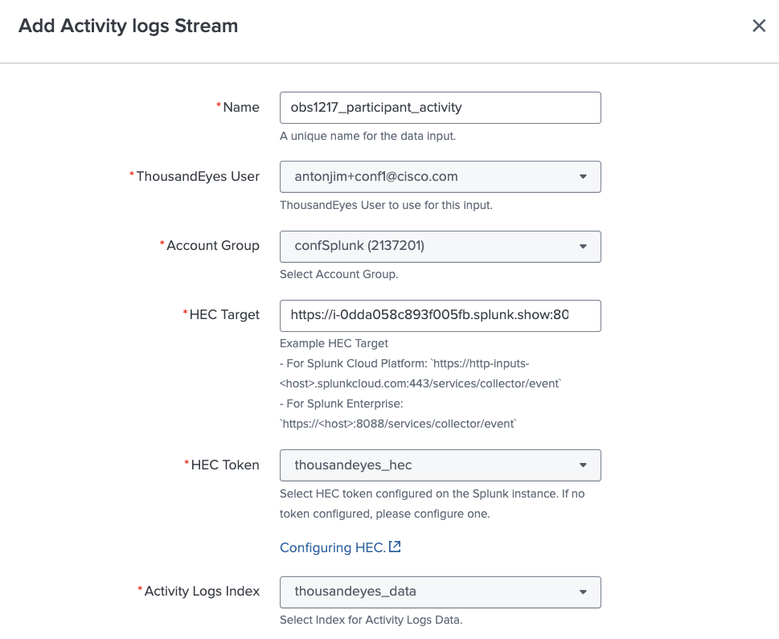
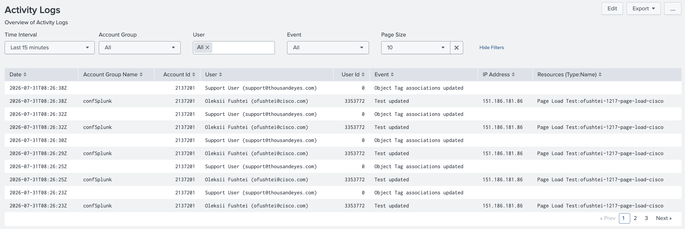

Create Activity Log Input
Configure Activity Log input
To configure ThousandEyes Activity Log stream, follow these steps:
- From the Splunk App, go to
Inputssection - Click
Create New Input, selectActivity logs Stream - Fill the form:
- Name: enter a unique name for your input
- ThousandEyes User: select your user
- Account Group: select your account group
- HEC Target: enter the HEC target of your Splunk instance. Example:
https://<host>:8088/services/collector/event - HEC Token: select
thousandeyes_hec - Activity logs Index: select
thousandeyes_data

Generate activity in ThousandEyes
For the dashboard to have data, we need to generate activities in the ThousandEyes platform, for example: - Log In to the ThousandEyes platform - Create a test - Update a test - Logout from the ThousandEyes platform
View Activity Log Dashboards
- Generate some activity logs in ThousandEyes by creating/deleting tests.
- In the
Dashboardssection, selectActivity Log
Data may not be ready - Wait a few minutes
The telemetry needs to be generated by the application and send to Splunk. This may take a few minutes.
